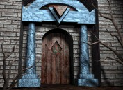
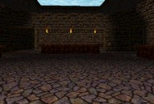
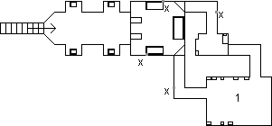

Bootleg Bay: Temple of the Sun
This forgotten shrine of the Church of the Sun still stands.
For all of its ti me in the humid jungle, the temple remaings
in surprisingly good condition.



1
Minotaur King, 500-700 HP
Sacred Chalice (quest item) can be found in one of the chests.
x - marks a spot where you can find a treasure chest or the likes, in this
dungeon you will find hidden Sun Ray spell scrolls. Very Powerful!